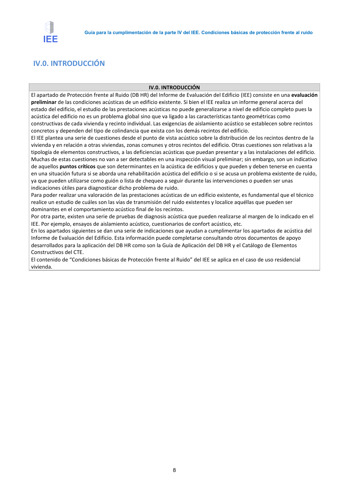
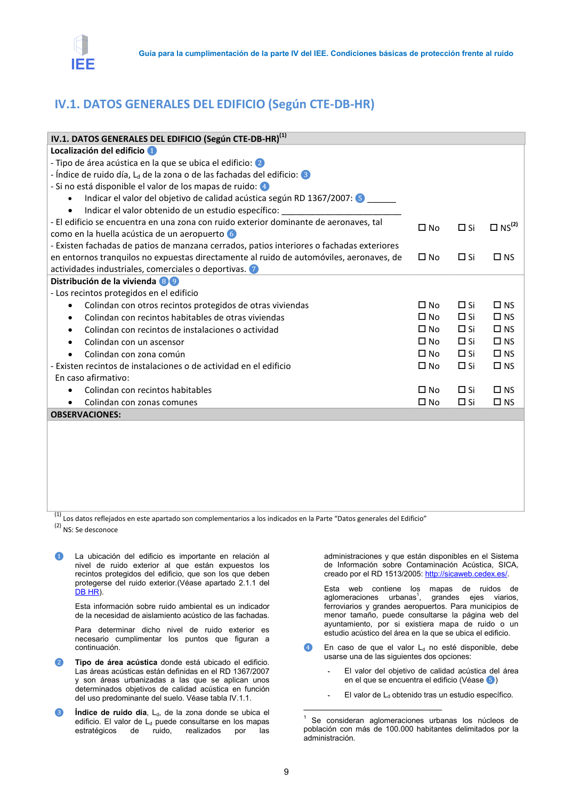

GUIA · IV.0. INTRODUCCIÓN · versión 2016-11-01 · capa guia
Formatos: JSON compacto · Markdown · PDF fuente
Ámbito del documento · texto del ámbito · documento y tablas
Tipo: referencias, tablas, figuras · nivel 3 · sección estimada: Anejo 3. Valoración del aislamiento acústico de elementos de separación horizontales y sus mejoras · padre: a0003
IV.0. INTRODUCCIÓN IV.0. INTRODUCCIÓN El apartado de Protección frente al Ruido (DB HR) del Informe de Evaluación del Edificio (IEE) consiste en una evaluación preliminar de las condiciones acústicas de un edificio existente. Si bien el IEE realiza un informe general acerca del estado del edificio, el estudio de las prestaciones acústicas no puede generalizarse a nivel de edificio completo pues la acústica del edificio no es un problema global sino que va ligado a las características tanto geométricas como constructivas de cada vivienda y recinto individual. Las exigencias de aislamiento acústico se establecen sobre recintos concretos y dependen del tipo de colindancia que exista con los demás recintos del edificio. El IEE plantea una serie de cuestiones desde el punto de vista acústico sobre la distribución de los recintos dentro de la vivienda y en relación a otras viviendas, zonas comunes y otros recintos del edificio. Otras cuestiones son relativas a la tipología de elementos constructivos, a las deficiencias acústicas que puedan presentar y a las instalaciones del edificio. Muchas de estas cuestiones no van a ser detectables en una inspección visual preliminar; sin embargo, son un indicativo de aquellos puntos críticos que son determinantes en la acústica de edificios y que pueden y deben tenerse en cuenta en una situación futura si se aborda una rehabilitación acústica del edificio o si se acusa un problema existente de ruido, ya que pueden utilizarse como guión o lista de chequeo a seguir durante las intervenciones o pueden ser unas indicaciones útiles para diagnosticar dicho problema de ruido. Para poder realizar una valoración de las prestaciones acústicas de un edificio existente, es fundamental que el técnico realice un estudio de cuáles son las vías de transmisión del ruido existentes y localice aquéllas que pueden ser dominantes en el comportamiento acústico final de los recintos. Por otra parte, existen una serie de pruebas de diagnosis acústica que pueden realizarse al margen de lo indicado en el IEE. Por ejemplo, ensayos de aislamiento acústico, cuestionarios de confort acústico, etc. En los apartados siguientes se dan una serie de indicaciones que ayudan a cumplimentar los apartados de acústica del Informe de Evaluación del Edificio. Esta información puede completarse consultando otros documentos de apoyo desarrollados para la aplicación del DB HR como son la Guía de Aplicación del DB HR y el Catálogo de Elementos Constructivos del CTE. El contenido de “Condiciones básicas de Protección frente al Ruido” del IEE se aplica en el caso de uso residencial vivienda. Guía para la cumplimentación de la parte IV del IEE. Condiciones básicas de protección frente al ruido 9


PDF fuente redistribuible: copia fiel enlazada en esta página (SHA256 verificado).